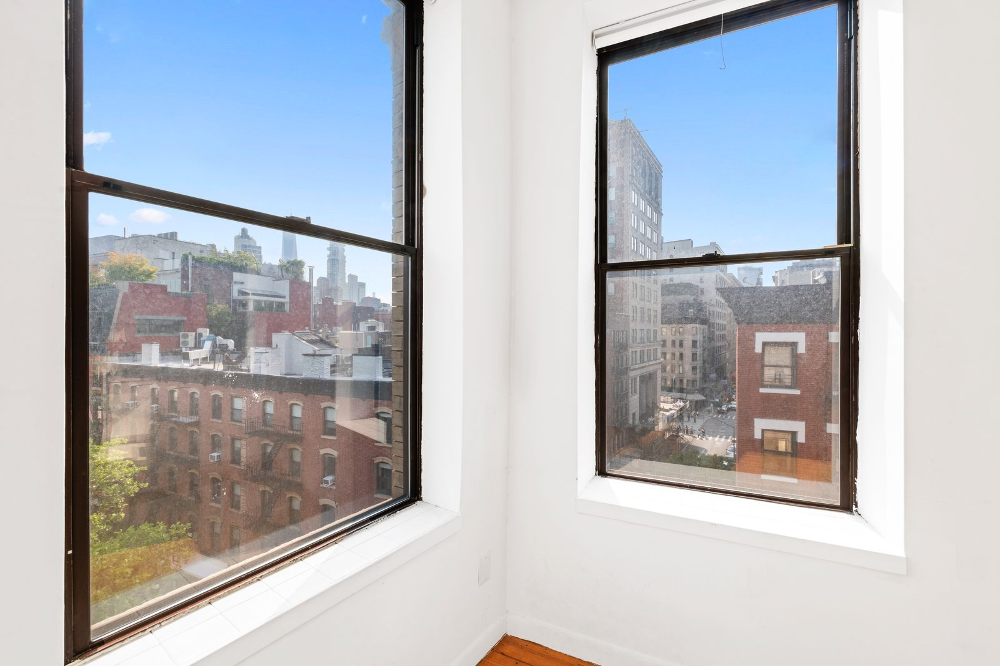

Manhattan · Neighborhood guide
Nolita Neighborhood Guide
Boundaries, ZIP code, apartments, subway lines and September 2026 market figures for Nolita (North of Little Italy) in Manhattan, New York City.
By Glenn Velasco
Licensed Real Estate Salesperson · Compass
Updated

- Median sale price
- $3,404,046
- Small sample: 8 sales
- Median price per sq ft
- $2.12K/sq ft
- Median asking rent
- $5,500/mo
Sales: Redfin (opens in a new tab), 3 months ending Sept 2026. Rent: StreetEasy (opens in a new tab), Sept 2026.
Nolita, short for North of Little Italy, is a small Lower Manhattan neighborhood between SoHo and the Bowery, with tenement buildings, small shops and restaurants along Mulberry, Mott and Elizabeth Streets. This guide covers where Nolita begins and ends, what the name means, what kinds of apartments you'll find, how to get around, and what the market looks like now. Glenn Velasco is a Licensed Real Estate Salesperson at Compass who works with buyers, sellers and renters in Nolita.
01 / Boundaries
Where is Nolita? Boundaries and ZIP code
Nolita is bounded by Houston Street on the north, the Bowery on the east, roughly Broome Street on the south and Lafayette Street on the west. It lies east of SoHo, south of NoHo, west of the Lower East Side and north of Little Italy and Chinatown. Neighborhood boundaries in New York City aren't officially set, so listing sites may draw them differently.
Most addresses use ZIP code 10012.
02 / History
A short history: what Nolita means
Nolita is short for "North of Little Italy." The area was long regarded as part of Little Italy, and in the second half of the 1990s, as boutiques, restaurants and bars opened, a new name took hold. A May 5, 1996, New York Times article weighing several names for the area documented "Nolita" as the one that stuck. St. Patrick's Old Cathedral, at Mulberry, Mott and Prince Streets, opened in 1815 and was rebuilt in 1868 after a fire; in 2010 it became a basilica. The Feast of San Gennaro is held every year after Labor Day on Mulberry Street.
03 / Housing
Nolita apartments: co-ops, condos and rentals
Walk-ups and rentals
Most of Nolita's housing is in older tenement and walk-up buildings, often with shops on the ground floor. Rentals range from small walk-up apartments to units in elevator buildings and condo or co-op apartments rented by their owners.
Co-ops
Many older buildings are co-ops. Co-ops require board approval and a full financial package, and many limit financing, subletting or pied-à-terre use. If you're buying from abroad, co-op boards often ask for U.S. financial history, so it's worth checking a building's policies early. Glenn can walk you through the difference in English, Spanish, Italian or French.
Condos
Condos are fewer, in conversions and a small number of newer buildings. They're usually simpler to buy, with no board interview, which suits international and pied-à-terre buyers.
04 / Market snapshot
Nolita real estate market, September 2026
These figures come from public data sources, each measured differently, so read them as a range rather than a single price:
- Median asking price
- $3,495,000
- StreetEasy Data Dashboard, September 2026. This is the median asking price of listings that month.
- Median asking rent
- $5,500/mo
- StreetEasy Data Dashboard, September 2026
- Median sale price
- $3,404,046
- Over the three months ending September 2026, per Redfin, based on only 8 sales, with a median of 62 days on market and homes selling at 99.7% of list price.
Sources: StreetEasy Data Dashboard, September 2026; Redfin NoLita Housing Market, three months ending September 2026 (8 sales).
Nolita is small, so a handful of listings or sales can move these numbers a lot. StreetEasy's median asking price has stayed between $3,250,000 and $3,495,000 since April 2026, and its median asking rent between $5,250 and $5,630. Whether you're weighing Nolita apartments for sale or for rent, Glenn can pull recent comparable sales and rentals for the building you have in mind. If you already own in Nolita, you can request a free valuation.
05 / Subway lines
Getting around: Nolita subway lines
- Spring St (6), at Lafayette Street
- Bleecker St (6) and Broadway–Lafayette St (B, D, F, M), at Houston and Lafayette Streets
- Prince St (R, W), just west on Broadway
- Bowery (J, Z), at Bowery and Delancey Street
- 2 Av (F), just east of the Bowery on Houston Street
06 / Parks, libraries and landmarks
Parks, libraries and landmarks
Landmarks include St. Patrick's Old Cathedral and the Puck Building, a nine-story building from 1885 at Houston and Lafayette Streets that once housed *Puck* magazine. DeSalvio Playground and Petrosino Square are small public parks. The New York Public Library has a Mulberry Street Library branch.
07 / Public schools
Public schools
Public schools. School zones vary by address. Check any address with the NYC Department of Education's school search (opens in a new tab).
08 / Recently sold

Recently sold in Nolita
214 Mulberry Street, Unit 6B
(opens on Compass in a new tab)09 / Buying or renting with Glenn
Buying or renting Nolita with Glenn
Buying or renting in Nolita comes down to understanding the building: walk-up or elevator, co-op board requirements, what the maintenance or common charges cover, and how a particular apartment compares with the few similar ones that come up nearby. Glenn handles that work for buyers, sellers and renters. As part of the M Team at Compass, he specializes in international buyers and investors, condos, co-ops and rentals, and he works in English, Spanish, Italian and French.
Planning a purchase? Start with the Buyer's Guide. Looking to rent? The Renter's Guide covers documents, income requirements and applications. Then contact Glenn at 929.392.3707 or glenn.velasco@compass.com.
10 / FAQ
Nolita FAQ
What are the boundaries of Nolita?
Nolita runs from Houston Street south to roughly Broome Street, between Lafayette Street and the Bowery. Neighborhood boundaries in New York City aren't officially set, so other sources may differ.
What does Nolita mean?
Nolita is short for "North of Little Italy." The name took hold in the second half of the 1990s; a May 5, 1996, New York Times article documented it as the name that stuck.
What subway lines serve Nolita?
The 6 stops at Spring Street and Bleecker Street, the B, D, F and M at Broadway–Lafayette Street, the R and W at Prince Street, the J and Z at Bowery, and the F at Second Avenue.
What is the average rent in Nolita?
StreetEasy doesn't publish an average, but its median asking rent for Nolita was $5,500 a month in September 2026, within a range of $5,250 to $5,630 since April. Half of the listed apartments asked more and half asked less, and studios and larger apartments sit far apart, so the right number depends on the size and building you want.
How much does it cost to live in Nolita?
StreetEasy's September 2026 data shows a median asking price of $3,495,000 and a median asking rent of $5,500 a month. Redfin reports a median sale price of $3,404,046 (based on only 8 sales) for the three months ending September 2026. The median asking rent is the closest public measure of the average rent in Nolita. Prices vary widely by building and apartment, so ask Glenn for recent comparable sales.
What ZIP code is Nolita?
Most Nolita addresses use ZIP code 10012.
Can Glenn Velasco help me buy or rent in Nolita in Spanish, Italian or French?
Yes. Glenn Velasco is a Licensed Real Estate Salesperson at Compass who works with buyers, sellers and renters in English, Spanish, Italian and French, including international buyers. Reach him at 929.392.3707 or glenn.velasco@compass.com.
11 / Sources
Sources
Sources, each checked October 29, 2026: StreetEasy Data Dashboard, September 2026 (opens in a new tab); Redfin, NoLita Housing Market (opens in a new tab); Wikipedia, Nolita (opens in a new tab); MTA subway stations data (opens in a new tab); New York Public Library, Mulberry Street Library (opens in a new tab); NYC GeoSearch (opens in a new tab); NYC Open Data, School Zones 2024–2025 (opens in a new tab); NYC Public Schools, Find a School (opens in a new tab).